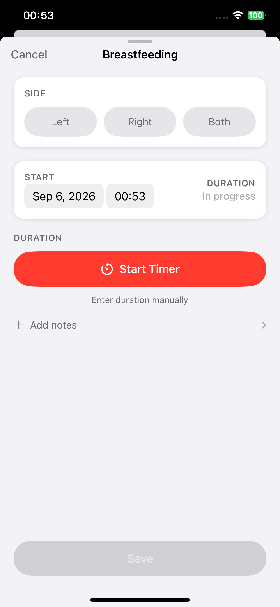
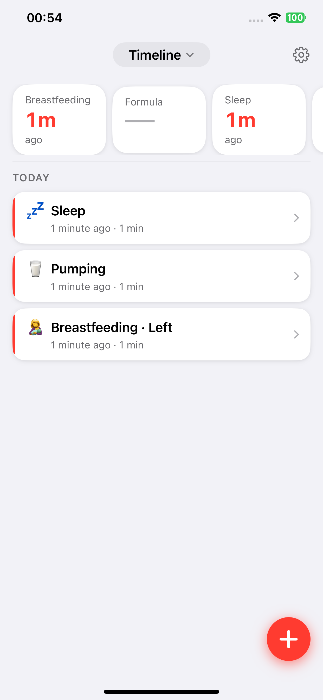
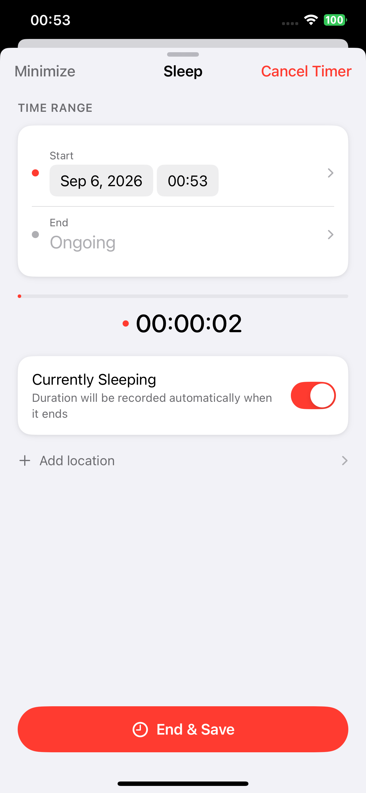
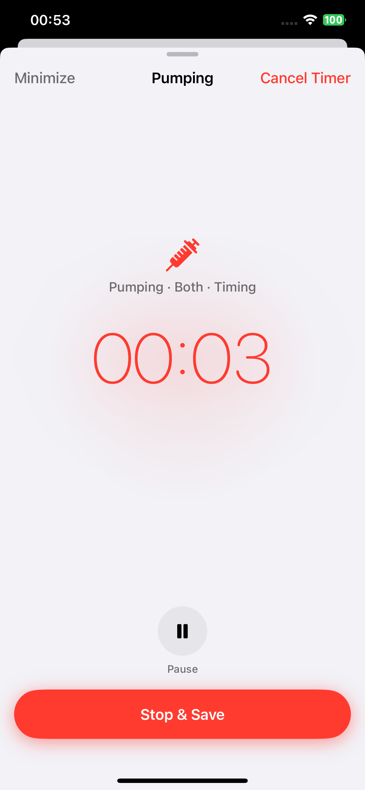

Feeding
Log breastfeeding, bottle feeds, and pumping. For breastfeeding, choose left, right, or both; run a timer or enter a duration manually.
Available on the App Store · iPhone
Avolumi brings breastfeeding, bottle feeds, sleep, diapers, pumping, and growth into one timeline. Your data stays on your device and can sync through your own private iCloud database.

One timeline is not about making you remember more.
It helps you find the care that already happened, exactly when you need it.
Real screens from the current release

Log breastfeeding, bottle feeds, and pumping. For breastfeeding, choose left, right, or both; run a timer or enter a duration manually.

Start a sleep timer or add the start and end times later. An active record makes the elapsed time easy to see.

Track left, right, and total volume while a pumping session is in progress. Diaper, height, and weight records remain available from the Timeline too.
Every screen here is an unedited product screenshot from the current release—never generated or fictitious UI.
Your family's data stays yours
Avolumi has no account system, ads, or third-party tracking SDKs. Records stay on your device; when you use iCloud, they sync through your own private iCloud database to your devices.
Read the privacy policyA few clear answers
You can log breastfeeding, bottle feeds, sleep, diapers, pumping, height, and weight. Every entry is organised in the Timeline.
See feeding, sleep, and diaper trends, and export CSV data. Avolumi Premium also includes PDF record summaries, feeding-interval reminders, weekly summaries, and JSON backup and restore.
No. Core logging works locally on your device. If you choose to sync, iCloud uses your own Apple Account and private database.
Yes. Avolumi is available on the App Store for iPhone. Visit the App Store for the latest version, system requirements, and purchase options.
Visit the support page to contact us. We especially want to know: which step made you pause for an extra second?
Available on the App Store
Start with one real entry. The rest of what happened will be there when you need to find it.
Download on the App Store